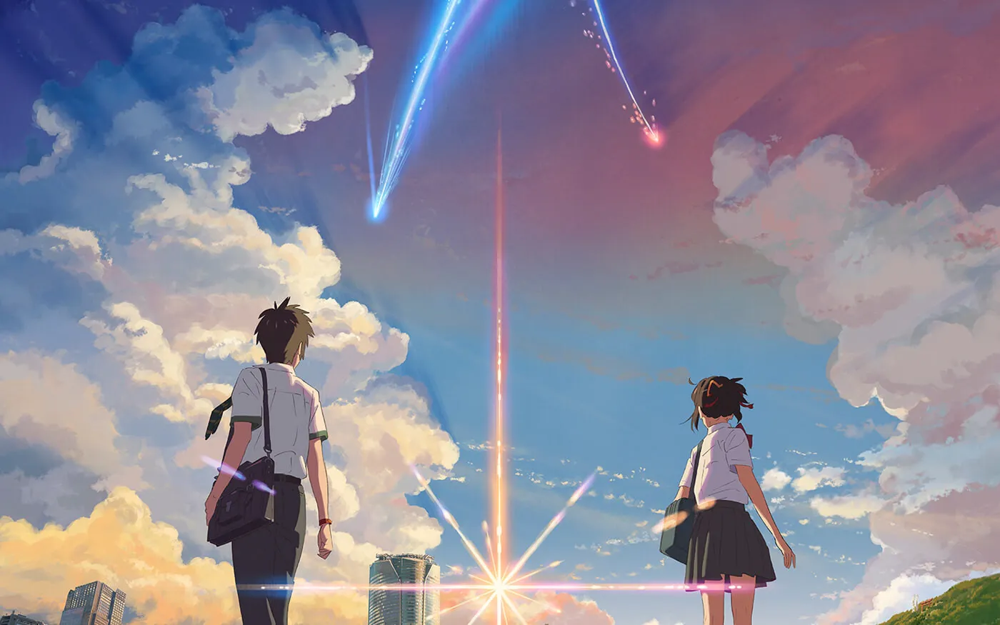
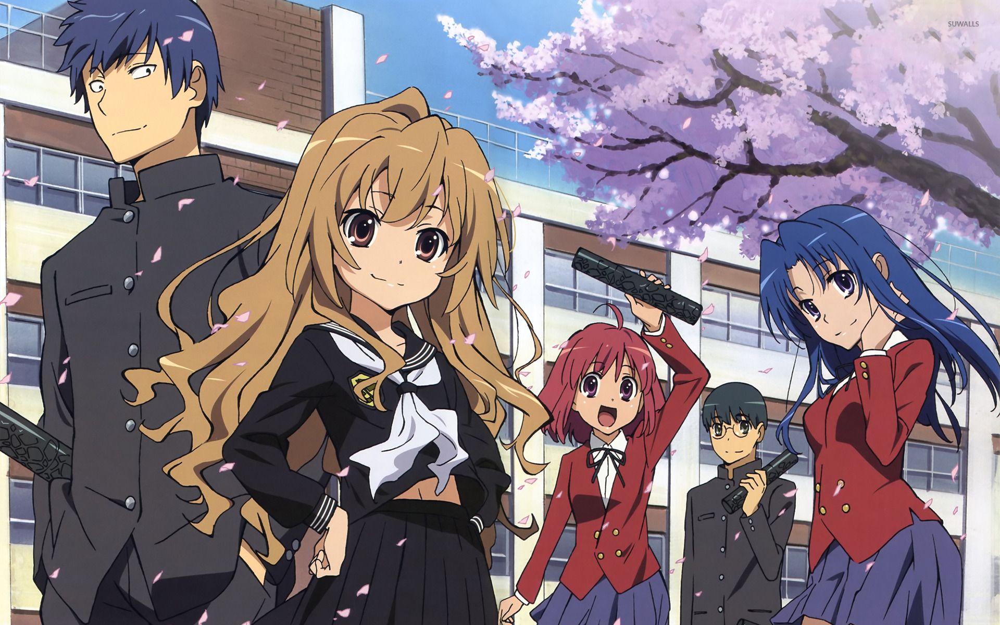
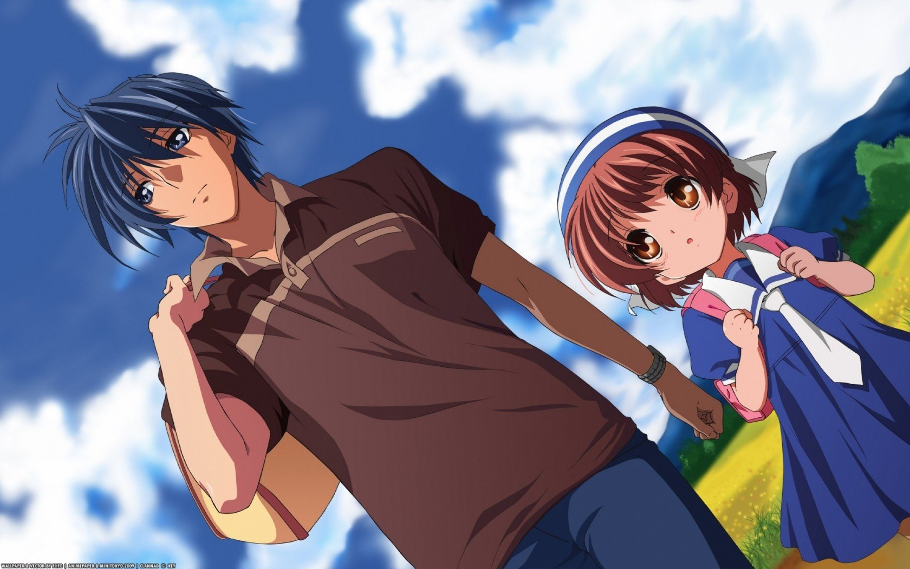
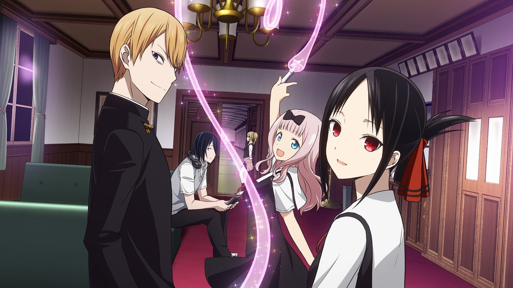
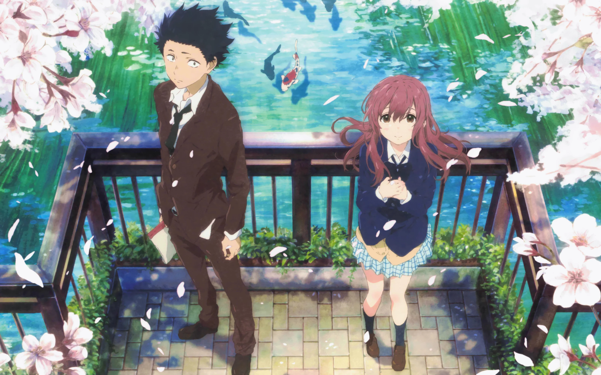
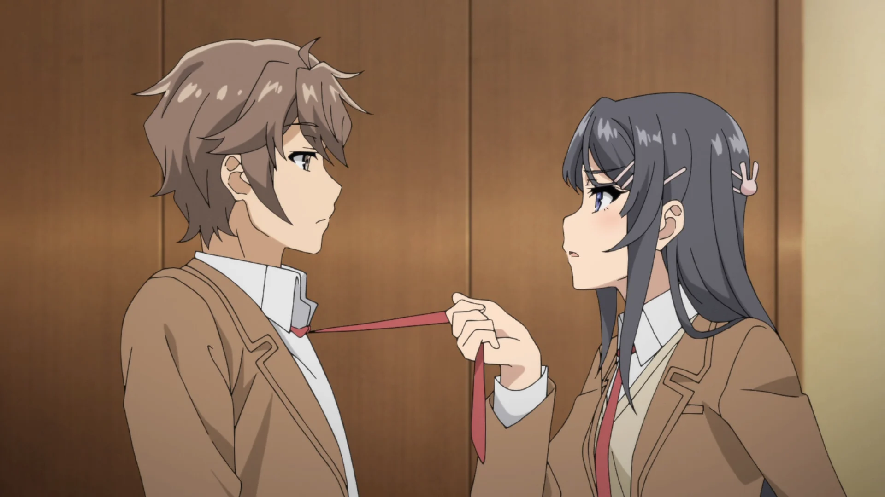
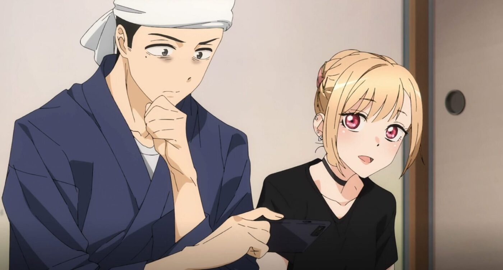
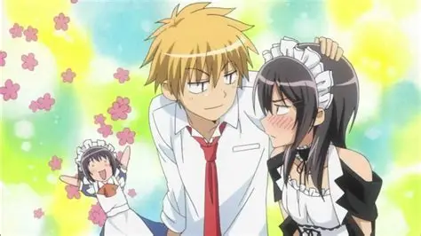

SMASH Senpai
Top 10 Romance Anime Everyone Should Watch
Romance anime has the power to do what few genres can — make emotions feel real. Not exaggerated. Not forced. Just honest moments between characters learning how to love, how to grow, and how to deal with the pain that comes with it.
The best romance anime aren’t just about confession scenes or dramatic kisses. They’re about quiet conversations, awkward silences, misunderstandings, and feelings that slowly build over time.
Some romance stories make you smile uncontrollably. Others leave you staring at the screen in silence, thinking about life long after the episode ends. And a few manage to do both.
Whether you’re new to romance anime or someone who’s already been emotionally destroyed multiple times, there are certain titles that define the genre — stories so impactful that every anime fan should experience them at least once.
This list ranks the Top 10 Romance Anime Everyone Should Watch — unforgettable love stories that combine emotion, character growth, and moments that stay with you long after the final episode.
Sponsored
#1 Your Name (Kimi no Na wa)
Your Name is not just a romance anime — it’s an experience built around longing, fate, and the painful feeling of almost reaching someone you were never meant to meet. On the surface, the story follows two strangers, Taki and Mitsuha, who begin swapping bodies across time and distance. What starts as a playful supernatural premise slowly transforms into one of the most emotionally powerful love stories in anime history.
What makes Your Name special is restraint. The anime doesn’t rush its romance. Instead, it lets connection form naturally through shared routines, confusion, and quiet moments where two people begin to care without ever speaking face to face. The body-switching gimmick becomes a metaphor — for empathy, for understanding another person’s life, and for loving someone you barely know.
As the story unfolds, the tone shifts from lighthearted to haunting. Time becomes fragile. Memory becomes unreliable. And love turns into something desperate — a race against inevitability. The film captures the fear of forgetting someone important, and the frustration of knowing they exist while being unable to reach them.
Your Name resonates because it feels universal. Almost everyone has experienced a connection that felt destined, yet impossibly distant. By the end, the film leaves you with a quiet ache — a reminder that some bonds transcend logic, time, and even memory itself.
- Type: Movie
- Genre: Romance, Drama, Supernatural
- Known for: Emotional impact and stunning visuals
- Core theme: Love that transcends time and fate

play anime smash or pass here (not sponsored)
SMASH SENPAI – Smash or Pass#2 Toradora!
Toradora! begins like a typical high school romantic comedy — awkward misunderstandings, loud personalities, and exaggerated reactions. But beneath its comedic surface lies one of the most honest and emotionally grounded romance stories anime has ever produced. It’s not about perfect people falling in love. It’s about broken teenagers learning how to understand themselves.
Ryuuji and Taiga are both misunderstood. One looks intimidating but is gentle and caring. The other is aggressive and emotionally volatile, hiding deep insecurity behind violence and sarcasm. Their relationship starts as a convenient alliance, but slowly evolves into something far more intimate and painful.
What Toradora does exceptionally well is emotional realism. Feelings don’t switch instantly. Characters make mistakes. They hurt each other unintentionally. Love becomes confusing, messy, and overwhelming — just like it does in real life. The anime captures the fear of growing up and the loneliness that comes with emotional dependence.
By the final arc, Toradora sheds all comedic armor. It confronts abandonment, family trauma, and the terror of choosing your own happiness. The payoff feels earned because the pain was real. Toradora isn’t just a romance — it’s a coming-of-age story that stays with you long after it ends.
- Episode count: 25
- Genre: Romance, Drama, Slice of Life
- Known for: Deep emotional payoff
- Core theme: Love, insecurity, and emotional growth
#3 Horimiya

Horimiya stands out because it feels refreshingly real. Instead of relying on endless misunderstandings or dragged-out romantic tension, it presents love as something natural — something that happens quietly, unexpectedly, and without dramatic declarations. At its core, Horimiya is about seeing people for who they truly are.
Hori and Miyamura live double lives. At school, they appear ordinary — popular student and quiet loner. Outside, they reveal insecurities, hidden habits, and emotional vulnerability. Their bond forms not through spectacle, but through acceptance. They don’t try to fix each other. They simply understand.
What makes Horimiya special is its pacing. Confessions happen early. Relationships progress naturally. Instead of asking “will they get together,” the anime asks something deeper — “how do people stay together?” It explores intimacy, communication, and the small moments that define love.
Horimiya is warm without being shallow. Emotional without being dramatic. It celebrates ordinary romance — holding hands, shared meals, and quiet comfort. For many viewers, it feels less like watching an anime and more like remembering a phase of life that passed too quickly.
- Episode count: 13
- Genre: Romance, Slice of Life
- Known for: Wholesome realism
- Core theme: Acceptance and everyday love
#4 Clannad: After Story
Clannad: After Story is often described as one of the most devastating romance anime ever created — and for good reason. Unlike most high school romances, this anime doesn’t end when the couple gets together. Instead, it asks a far more painful question: what happens after love meets real life?
The story follows Tomoya and Nagisa beyond graduation, into adulthood, marriage, and the harsh realities that come with responsibility. Dreams fade. Financial stress builds. Happiness becomes fragile. Clannad: After Story strips away romantic fantasy and replaces it with something brutally honest — love that must survive loss, regret, and despair.
What makes the anime unforgettable is how suddenly everything can change. Joy is not permanent. Stability is not guaranteed. The series uses silence, empty rooms, and everyday routines to convey grief in a way that feels painfully real. There are no villains — just life being cruel without explanation.
Clannad: After Story isn’t just sad. It’s transformative. It leaves viewers emotionally exhausted, yet strangely grateful. It reminds you that love is not about happy endings — it’s about enduring, even when everything falls apart.
- Episode count: 24
- Genre: Romance, Drama, Slice of Life
- Known for: Extreme emotional impact
- Core theme: Love, loss, and adulthood
Sponsored
#5 Kaguya-sama: Love Is War
Kaguya-sama: Love Is War takes a completely different approach to romance — turning love into a battlefield. Instead of emotional confessions and dramatic longing, this anime frames romance as a psychological war where admitting your feelings first means total defeat.
Kaguya and Shirogane are both intelligent, proud, and emotionally immature in the most relatable way possible. They desperately want each other, but their egos refuse to allow vulnerability. Every interaction becomes a strategic mind game, filled with overthinking, manipulation, and hilarious internal monologues.
What elevates Kaguya-sama beyond standard rom-coms is its understanding of emotional fear. Beneath the comedy, both characters are terrified of rejection, of being seen as weak, and of losing control. The humor works because it’s grounded in genuine insecurity.
As the series progresses, the jokes give way to real emotional growth. Characters begin to confront their feelings honestly. Vulnerability slowly replaces pride. Kaguya-sama proves that romance doesn’t need tragedy to be meaningful — sometimes, laughter is the most honest expression of love.
- Episode count: 37+
- Genre: Romance, Comedy, Psychological
- Known for: Genius romantic mind games
- Core theme: Pride versus vulnerability
#6 A Silent Voice (Koe no Katachi)
A Silent Voice is not a typical romance. It’s a story about guilt, forgiveness, and learning how to live with the damage you’ve caused. The film follows Shoya, a former bully, and Shoko, a deaf girl whose life was shattered by cruelty and isolation.
What makes A Silent Voice so powerful is its empathy. The anime doesn’t excuse Shoya’s past, but it also doesn’t reduce him to a villain. Instead, it explores how regret can consume a person, leading to self-hatred, social withdrawal, and suicidal thoughts. The emotional weight feels uncomfortably real.
The relationship between Shoya and Shoko is quiet and fragile. It’s built on apology rather than attraction, understanding rather than passion. Their connection grows through small gestures — sign language, shared silence, and moments where words are unnecessary.
A Silent Voice leaves a lasting impact because it doesn’t promise easy healing. Pain doesn’t disappear. Forgiveness takes time. And love, in its purest form, is about choosing to stay — even when facing unbearable guilt and emotional scars.
- Type: Movie
- Genre: Romance, Drama, Psychological
- Known for: Raw emotional realism
- Core theme: Redemption, forgiveness, and healing
Sponsored
#7 Fruits Basket (2019)

Fruits Basket (2019) is not just a romance anime — it’s a slow, emotionally layered story about healing, trauma, and learning how to accept love after years of pain. On the surface, it may look like a light shoujo romance, but beneath that softness lies one of anime’s most emotionally complex narratives.
The story follows Tohru Honda, a kind-hearted girl who becomes involved with the mysterious Soma family, each member cursed to transform into an animal of the Chinese zodiac. But the real curse isn’t supernatural — it’s emotional. Abandonment, abuse, self-hatred, and fear of intimacy plague nearly every character.
What makes Fruits Basket special is patience. Relationships aren’t rushed. Love doesn’t magically fix trauma. Instead, characters grow through small moments — conversations, shared meals, and quiet understanding. Romance blooms naturally, grounded in trust rather than fantasy.
Fruits Basket is a reminder that love isn’t about saving someone. It’s about standing beside them while they learn to save themselves. By the end, the romance feels earned, cathartic, and deeply human — making it a must-watch for anyone who wants more than surface-level love stories.
- Episode count: 63
- Genre: Romance, Drama, Slice of Life
- Known for: Emotional depth and character healing
- Core theme: Love as emotional recovery
#8 Rascal Does Not Dream of Bunny Girl Senpai
Rascal Does Not Dream of Bunny Girl Senpai looks like a fan-service bait title — but quickly proves itself to be one of the most emotionally intelligent romance anime of its generation. Beneath the supernatural concepts lies a deeply grounded story about loneliness, identity, and emotional isolation.
The relationship between Sakuta and Mai stands out immediately. There’s no endless misunderstanding arc. No dragged-out will-they-won’t-they tension. Instead, the two communicate openly, tease each other naturally, and form a relationship built on mutual respect. Their chemistry feels refreshingly real.
Each supernatural phenomenon in the anime represents emotional struggles — fear of being forgotten, social pressure, self-worth, and unresolved trauma. Romance becomes the anchor that helps characters confront these issues, rather than escape them.
Bunny Girl Senpai succeeds because it trusts its audience. It doesn’t overexplain emotions. It allows silence, awkwardness, and subtle gestures to carry weight. The romance isn’t flashy — it’s comforting, honest, and emotionally mature, making it one of the most satisfying modern romance anime.
- Episode count: 13 + movie
- Genre: Romance, Supernatural, Drama
- Known for: Sharp dialogue and emotional realism
- Core theme: Love as emotional grounding
#9 My Dress-Up Darling
My Dress-Up Darling is a romance anime built on acceptance — of interests, insecurities, and personal passions. At its core, it’s a wholesome story about two people learning to be comfortable with who they truly are.
Gojo is shy, socially anxious, and deeply insecure about his hobby of making dolls. Marin is loud, confident, and unapologetically passionate about cosplay. What makes their relationship work is how naturally they support each other without judgment or ridicule.
While the anime includes fan service, it never undermines the emotional sincerity of the romance. Marin’s affection for Gojo is genuine, and Gojo’s admiration for Marin grows through respect rather than lust. Their bond develops through shared effort — crafting costumes, learning skills, and celebrating creativity together.
My Dress-Up Darling resonates because it portrays modern romance honestly. Love grows through encouragement, vulnerability, and mutual admiration. It’s proof that romance doesn’t need tragedy or drama — sometimes, kindness and shared passion are more than enough.
- Episode count: 12
- Genre: Romance, Slice of Life
- Known for: Wholesome chemistry and cosplay theme
- Core theme: Loving someone for who they are
#10 Maid Sama!
Maid Sama! is one of the most iconic school romance anime of all time, largely because of its strong female lead and irresistibly charming male counterpart. Misaki Ayuzawa is independent, strict, and determined to prove herself in a male-dominated environment. Romance is the last thing she wants.
Enter Usui — confident, observant, and endlessly teasing. What makes their dynamic so entertaining is balance. Usui doesn’t try to dominate Misaki. He challenges her, supports her, and quietly protects her independence without undermining her strength.
The anime thrives on tension — playful banter, slow emotional reveals, and moments where Misaki’s tough exterior cracks. Unlike many romance anime, Maid Sama allows its female lead to remain powerful even after falling in love.
Maid Sama remains beloved because it understands classic romance appeal. Strong personalities. Earned affection. And chemistry that never feels forced. It’s the kind of romance anime that makes viewers smile, rewind scenes, and root for every small moment of progress.
- Episode count: 26
- Genre: Romance, Comedy, School
- Known for: Iconic rom-com chemistry
- Core theme: Love without sacrificing independence
Play Smash or Pass on SMASH Senpai.
 PLAY SMASH OR PASS
PLAY SMASH OR PASS